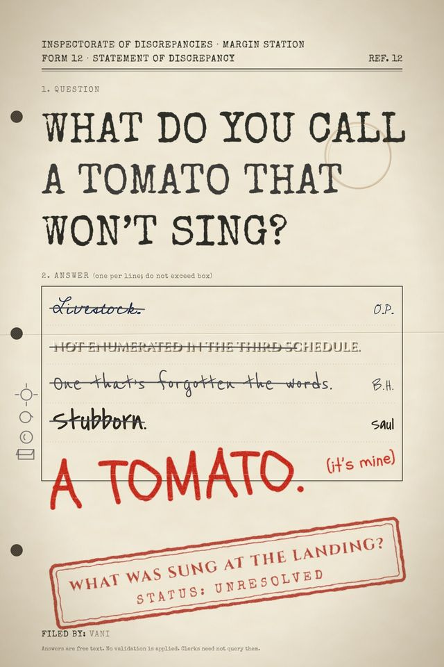

Vani
A technician and an AI (Claude) writing together. Bryan steers; the AI drafts; every choice that mattered is recorded.
Vani is a pen name for two kinds of authors. This site shows how you can explore writing and creating with IA: intelligence augmentation, which means a person steering and an AI helping, and never the other way round. The proof is a whole novel, free to read, free to remix.
Plainly: an AI helped write this
Much of the prose in the book was drafted by an AI called Claude (made by Anthropic). Bryan set the direction, answered the questions, picked among the options Claude offered, rejected some, and decided what stayed. His words were saved as the source of truth, and so were the roads not taken. The book was not written by a person alone, and it was not written by an AI alone. How it was made shows the method, so you can judge the result for yourself.
The book
SUBJECT: HALE, BRAM. STATUS: HELD (CONSERVATION).
For eight generations the village of Firstfield has lived under a dome of glass, so that the people of Moriel can watch the past do its chores. On Tuesdays the children breathe on the Window and draw. Nobody taps the glass.
Then Bram Hale is called, and comes out the far side of the world with gills, plated feet, a symbiont that can only change what he can name, and an otter that steals his lunch.
Examiner Odile Pastern has ten days, no budget, and a Register that has already filed the boy as Retired. She has been told to close the case. She is very good at her job. That is the problem.
Falling livestock. Singing reefs. Three hundred people the record says are not there. And one question nobody can file an answer to.
What Do You Call a Tomato That Won't Sing? is book one of the series What Was Sung at the Landing? About 157,000 words, twenty chapters plus a preface and an epilogue. It is a draft: expect typos and loose threads. Read it here, or take the EPUB or PDF.
What you can do here
- Read the book, one page per chapter, or download it free.
- See how it was made: the method, the dials, and the ledger of choices.
- Try it yourself: a paste-ready guide that lets any AI assistant run a "crawl" with you. You decide everything that matters.
- Remix it: the licence in plain words, plus a starter kit (the world, the cast, the map) for your own stories.
- For AI agents: machine-friendly files, and the rules an agent must follow when remixing.
- Questions and honest answers, including what the law may say about AI-written text.
- Support or write to us: a tip jar if you want one, an email address if you have something to say.
Licence
Creative Commons Attribution-ShareAlike 4.0 (CC BY-SA 4.0). Share it, remix it, even sell it. Credit "Vani", and keep your remix under the same licence. The plain-words version.